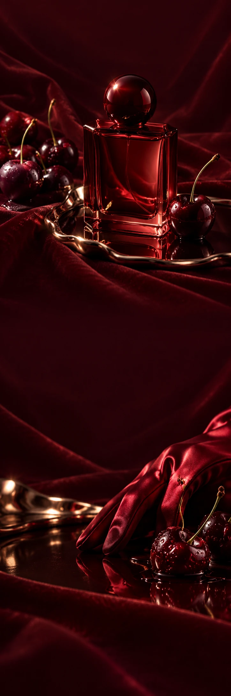

AFTERHOURS.
De avond
heeft een
andere kant.
Je jas ligt nog over de stoel.
De stad begint net.
MINUIT
Een opening van zwarte kers.
Een hart van roos.
Daarna: donker hout.
Voor het moment dat je besluit
nog niet naar huis te gaan.